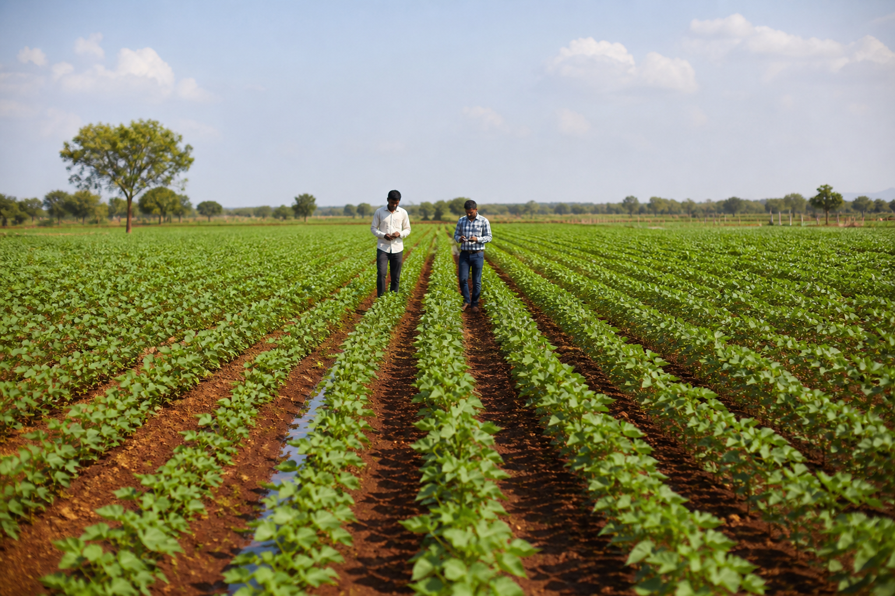
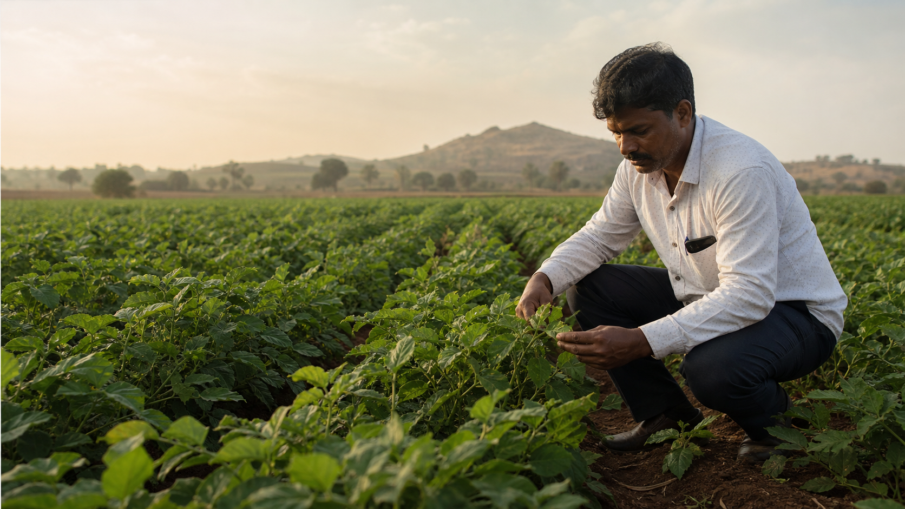

Crop Feasibility
We check whether the crop can be produced in the right season, location, isolation, and expected quantity.
Global Seed Solutions from India
Requirement-led contract seed production and sourcing coordination from Davangere, India, with crop feasibility review, grower coordination, seed handling support, and export documentation preparation.
Why Buyers Work With Us
Before accepting a program, we review the crop, variety, season, isolation needs, acreage, expected quantity, quality standard, and shipment destination. This helps us respond with a practical answer instead of a general promise.
We check whether the crop can be produced in the right season, location, isolation, and expected quantity.
Suitable grower capacity is reviewed before acreage, timeline, and production responsibility are discussed.
For urgent requirements, available Indian seed lots can be reviewed through suitable partners before any supply discussion.
Testing, handling, packing, and buyer quality expectations are discussed before shipment movement.
Commercial documents, phytosanitary coordination, packing details, and dispatch communication are handled step by step.
About Boosnur Genetics
Boosnur Genetics is a new-generation company built on practical agricultural understanding and a clear international vision.
We plan and cultivate seed crops on a contractual basis according to the variety, quantity, quality parameters, and delivery expectations agreed with each buyer. Where a buyer needs a quicker route, we can also coordinate sourcing discussions for available Indian seed lots through suitable partners, subject to verification and quality review.
Based in Davangere, one of Karnataka's important agricultural regions, we bring together field-level knowledge, attentive crop coordination, and a professional approach to export. Our company may be new, but our work is grounded in farming realities and relationships built through honest commitments.
Discuss your requirement →Working Principles
We prefer practical commitments: review the requirement, confirm feasibility, coordinate the field or source, and keep the buyer updated with facts.

Who We Are
We are contractual seed farmers and exporters who take responsibility for the crop from production planning to dispatch. Our confidence comes from practical field involvement: understanding growing conditions, following crop progress, responding to production realities, and keeping the buyer informed at every important stage.
Crop, season, quantity, and quality needs checked first.
Production or sourcing route selected only after feasibility.
Field, handling, documents, and dispatch followed with the buyer.
Seed Production Capabilities
The crops shown below are only examples of possible production areas. We also welcome enquiries for many other vegetable, field, herb, and specialty seed crops, with each requirement reviewed for local suitability, season, isolation, acreage, quantity, and quality expectations before confirmation.
Have Another Crop in Mind?
Share the crop, variety, expected quantity, quality standard, and preferred timeline. Our team will assess production feasibility and respond with a practical program approach.
Experience Where It Matters
For production work, the crop is followed by stage. For sourcing work, available lots are reviewed before discussion. In both cases, the focus stays on feasibility, quality expectations, packing, documentation, and dispatch readiness.

Growth, flowering, fruiting, maturity, and seed handling stages are checked during production.
Crop programs are discussed only after season, acreage, isolation, quantity, and quality needs are reviewed.
What We Do
Our work begins with the buyer's requirement. We can support planned contract production, and where immediate supply is needed, we can also help coordinate sourcing of available Indian seed lots through verified channels.
Understanding the required seed variety, quantity, quality expectations, production schedule, and destination market.
Cultivating seed crops on a contractual basis, with field activity planned around the agreed buyer requirement.
Reviewing available Indian seed lot options through suitable partners when the buyer needs a faster route than new production.
Coordinating seed preparation, quality discussions, documentation, logistics, and buyer communication for export movement.
Our Production Approach
Every enquiry is handled as a practical case. We first understand the crop and quantity, then decide whether new production, sourcing review, or future planning is the correct route.
Crop, variety, quantity, seed standard, destination, and expected timeline are reviewed first.
We review whether the requirement is better suited for new production or verified sourcing of available Indian seed lots.
Growers or sourcing partners are considered based on crop suitability, reliability, quantity, and quality expectations.
Production progress or available lot details are followed with practical communication and documentation.
Seed handling, testing needs, packing, and buyer quality expectations are reviewed before movement.
Documentation, shipment communication, and buyer updates are managed through dispatch.
Global Supply Vision
Compliance & Documentation
International seed trade depends on documentation as much as production or sourcing. We coordinate each requirement according to crop needs, shipment destination, and applicable Indian export procedures.
Support for export-ready business documentation and buyer onboarding.
Invoices, packing details, and commercial records prepared for shipment coordination.
Assistance with plant-health documentation based on destination requirements.
Testing and quality checks can be coordinated as required by the buyer.
Why Export
India grows high-quality agricultural products with the potential to serve markets across the world.
We export because we want that quality to travel further. By connecting carefully grown or responsibly sourced Indian seeds with international buyers, we create new opportunities for agriculture, strengthen global partnerships, and demonstrate what our region can deliver.
Every completed program helps us improve buyer relationships, strengthen our grower and sourcing network, and build practical proof for future export work.
Connecting Indian seed production and sourcing capability with overseas buyers.
Presenting crop work, quality discussion, and documentation in a professional export format.
Building future programs through successful trials, clear documentation, and dependable dispatch.
Contact Boosnur Genetics
Reach our team for contract seed production, verified sourcing review, export opportunities, and business partnerships.
Whether you need contract production, available Indian seed lot sourcing, or export coordination, share your requirement below and our team will review the practical next step, subject to verification and quality discussion.